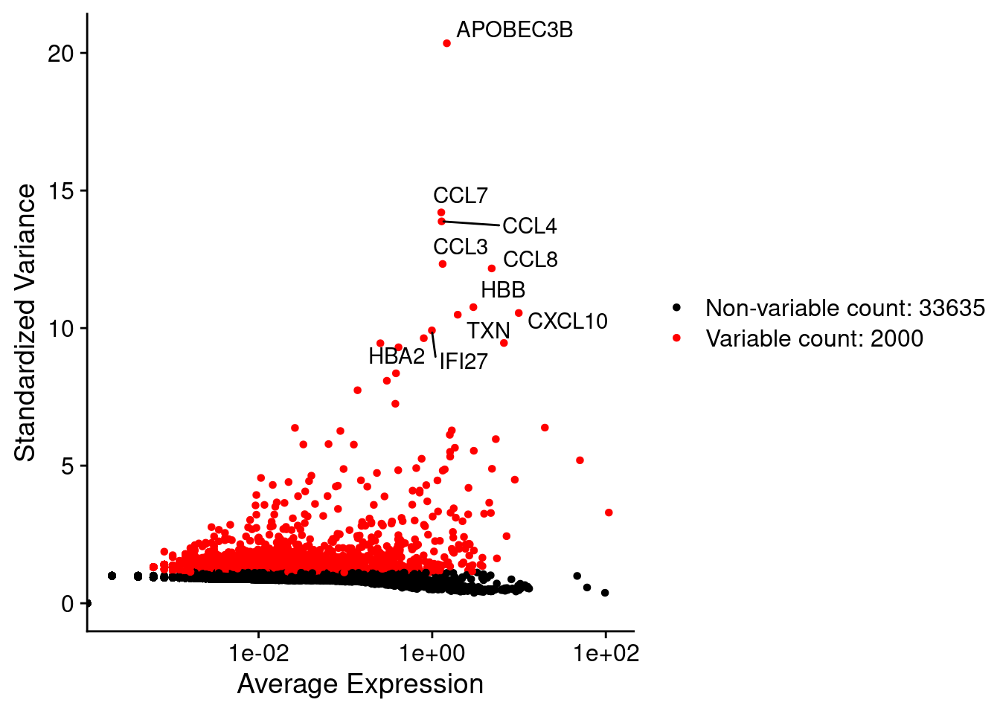

7 PCAs and UMAPs
7.1 Learning outcomes
- Have a conceptual understanding of the relationship between gene expression, principal components (PCs) and UMAP ‘dimensional reductions’, and why we need them.
- Be able to produce a useful UMAP visualisation for a given dataset.
We need to do some data processing before we can output a nice UMAP.
- Identify ~2000 variable genes - these are likely to be informative for cell types
- Scale data - consider genes equally
- Run PCA - Summarise ~2000 variable genes to ~20 dimensions
- Run UMAP - Summarise ~10-20 PCA dimensions to just 2 that we can see.
7.2 Identification of highly variable features (feature selection)
Why do we need to do this?
Identifying the most variable features allows retaining the real biological variability of the data and reduce noise in the data.
We next calculate a subset of features that exhibit high cell-to-cell variation in the dataset (i.e, they are highly expressed in some cells, and lowly expressed in others). The Seurat authors and others have found that focusing on these genes in downstream analysis helps to highlight biological signal in single-cell datasets.
The procedure in Seurat is described in detail here, and improves on previous versions by directly modelling the mean-variance relationship inherent in single-cell data, and is implemented in the FindVariableFeatures() function. By default, Seurat returns 2,000 features per dataset. These will be used in downstream analysis, like PCA.
seurat_object <- FindVariableFeatures(seurat_object, selection.method = 'vst', nfeatures = 2000)
#> Finding variable features for layer counts
# Identify the 10 most highly variable genes
top_vf <- head(VariableFeatures(seurat_object), 10)
# plot variable features with and without labels
plot1 <- VariableFeaturePlot(seurat_object)
plot2 <- LabelPoints(plot1, points = top_vf, repel = TRUE)
#> When using repel, set xnudge and ynudge to 0 for optimal results
plot2
#> Warning in scale_x_log10(): log-10 transformation
#> introduced infinite values.
7.3 Scaling the data
Why do we need to do this?
Highly expressed genes can overpower the signal of other less expressed genes with equal importance. Within the same cell the assumption is that the underlying RNA content is constant. Additionally, If variables are provided in vars.to.regress, they are individually regressed against each feature, and the resulting residuals are then scaled and centred. This step allows controlling for cell cycle and other factors that may bias your clustering.
Next, we apply a linear transformation (‘scaling’) that is a standard pre-processing step prior to dimensional reduction techniques like PCA. The ScaleData() function:
- Shifts the expression of each gene, so that the mean expression across cells is 0
- Scales the expression of each gene, so that the variance across cells is 1
- This step gives equal weight in downstream analyses, so that highly-expressed genes do not dominate
- The results of this are stored in
seurat_object$RNA@scale.data
all.genes <- rownames(seurat_object)
seurat_object <- ScaleData(seurat_object, features = all.genes)
#> Centering and scaling data matrixThis step takes too long! Can I make it faster?
Scaling is an essential step in the Seurat workflow, but only on genes that will be used as input to PCA. Therefore, the default in ScaleData() is only to perform scaling on the previously identified variable features (2,000 by default). To do this, omit the features argument in the previous function call, i.e.
# seurat_object <- ScaleData(seurat_object)DoHeatmap()) require genes in the heatmap to be scaled, to make sure highly-expressed genes don’t dominate the heatmap. To make sure we don’t leave any genes out of the heatmap later, we are scaling all genes in this tutorial.
How can I remove unwanted sources of variation, as in Seurat v2?
In Seurat v2 we also use the ScaleData() function to remove unwanted sources of variation from a single-cell dataset. For example, we could ‘regress out’ heterogeneity associated with (for example) cell cycle stage, or mitochondrial contamination. These features are still supported in ScaleData() in Seurat v3, i.e.:
# seurat_object <- ScaleData(seurat_object, vars.to.regress = 'percent.mt')SCTransform(). The method is described in their paper, with a separate vignette using Seurat v3 here. As with ScaleData(), the function SCTransform() also includes a vars.to.regress parameter.